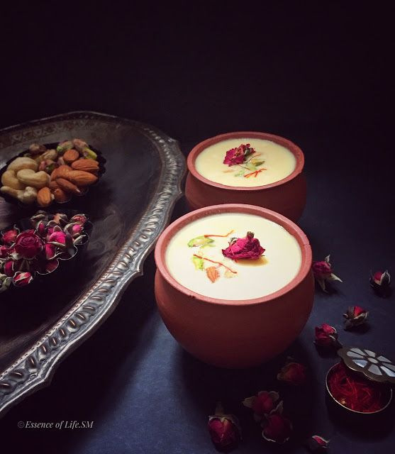

Taste of CLASSICS
Indian Traditional Sweets: Evergreen cuisine for festivities
A little tour to the variety of desserts our house provides……
1. Rasgulla (Rosgulla, Rosogolla,
Rasagolla):
Rasgulla is a traditional sweet that is usually served at the end of a meal, like many other Indian
milk-based desserts. It is prepared from chhena paneer dumplings and semolina dough, cooked together
in a sugary syrup. The origin of rasgulla is the subject of a heated debate, with West Bengal and
Odisha both claiming to be the birthplace of the dessert.
Bengalis claim that rasgulla was the byproduct of many culinary experiments in the state, while the
people of Odisha claim that it was traditionally offered to Lord Jagannath for centuries. However,
most food historians agree that the truth is somewhere in between.

2. Rabri:
Rabri (IAST: Rabaḍī) (Bengali: রাবরি) is a sweet, condensed-milk-based dish, originating from the Indian
subcontinent, more specifically Bengal region. Rabri is made by boiling milk on low heat for a long time
until it becomes dense and changes its colour to off-white or pale yellow. Jaggery, spices, and nuts are
added to it to give it flavor. It is chilled and served as dessert.
3. Sandesh:
Sandesh (Bengali: সন্দেশ Shôndesh) is a dessert, originating from the Bengal region in the eastern part of the
Indian subcontinent, created with milk and sugar. Some recipes of sandesh call for the use of chhena or paneer
(which is made by curdling the milk and separating the whey from it) instead of milk itself.

4. Kaju Katli :
Kaju katli (literally "cashew slice"), also known as kaju barfi, is an Indian dessert similar to a barfi. Kaju
means cashew; barfi is often made by thickening milk with sugar and other ingredients (such as dry fruits and mild
spices). Kesar kaju katli includes saffron.
5. Ladoo:
Laddu or laddoo (Hindi: लड्डू; Malay: kuih laddu; Indonesian: kue laddu) is a spherical sweet originating from
India and spread through the Indian subcontinent and the Malay world. Laddus are primarily made from flour, fat
(ghee/butter/oil) and sugar or jaggery. Laddus are often made of gram flour but can also be made with semolina.
Sometimes ingredients such as chopped nuts and/or dried raisins can also be added. The type of ingredients used
vary by recipe. Laddus are often served during festive or religious occasions.
6. Barfi (Barfee, Burfi):
Even though its name originates from Persia, barfi is an original Indian dessert which resembles a fudge. It is
made with a base of condensed milk solids (khoa or khoya), granulated sugar, and ghee, and the most common
ingredients added to the base include nuts, usually pistachios, cashews, and peanuts. However, fruits, saffron,
rose water, gram flour, or almonds are also found in some regional varieties.

7. Maysore Pak:
Mysore pak is an Indian sweet prepared in ghee. It originated in the city of Mysore, one of the major cities in
the Indian state of Karnataka. It is made of generous amounts of ghee, sugar, gram flour, and often cardamom. The
texture of this sweet is similar to a buttery and dense cookie.
8. Rasmalai :
Ras malai consists of flattened balls of chhena soaked in malai (a type of clotted cream) flavoured with cardamom.
Milk is boiled and a bit of vinegar or lime juice is added to split it. The whey is discarded and the milk solids
are drained, cooled and kneaded into a dough.
9. Malpua:
Malpua is popular in Bangladesh, Odisha, West Bengal, Bihar, Uttar Pradesh and Maharashtra and Nepal where it is
served during festivals along with other sweets.
The batter for malpua in some areas is prepared by crushing ripe bananas or (in Bangladesh) coconut, adding flour,
and water or milk. The mixture is sometimes delicately seasoned with cardamoms. It is deep fried in oil, and
served hot. In Odisha the Malpua fritters are dipped in syrup after they are fried. The Bihari version of this
dish has sugar added to the batter prior to frying.
10. Peda:
Peda (pronounced [peɽa]) or Pera is a mithai from the Indian subcontinent. It originated from Mathura, Uttar
Pradesh, India. Usually prepared in thick, semi-soft, its main ingredients are khoa, sugar and traditional
flavorings including cardamom seeds, pistachio nuts and saffron. Its colour varies from a creamy white to a
caramel colour. The word peda is also generically used to mean a sphere of any doughy substance such as flour or
khoa. Variant spellings and names for the dessert include pedha, penda (in Gujarati) and pera.
11. Ghewar :
This traditional Rajasthani sweet delicacy is made with a batter of flour, ghee, and cold water that is carefully
poured into piping hot oil or ghee to fry, yielding a round, disc-shaped dessert with an intricate pattern. After
it has been deep-fried to perfection, the dessert is either covered with or immersed into sugar syrup, and it's
typically garnished with thickened milk (rabri), silver flakes, and chopped nuts such as almonds or pistachios on
top.
Often dubbed the honeycomb dessert due to its distinctive appearance, ghevar is usually flavored with saffron and
cardamom powder, and it can also be made with khoa (dried evaporated milk solids) or malai (milk cream) instead of
water.
12. Modak (Mothagam, Kozhukattai, Modhaka, Kadubu, Kudumu,
Kozhakkatta):
Modak (Sanskrit: मोदक; Japanese: 歓喜団; Thai: โมทกะ or ขนมต้ม; Malaysian: Kuih modak; Indonesian: Kue modak;
Burmese: မုန့်လုံးရေပေါ်), also referred to as Koḻukattai (கொழுக்கட்டை) in Tamil, is an Indian sweet dumpling dish
popular in many Indian states and cultures. According to Hindu and Buddhist beliefs, it is considered one of the
favourite dishes of Lord Ganesha and the Buddha and is therefore used in prayers.The sweet filling on the inside
of a modak consists of freshly grated coconut and jaggery, while the outer soft shell is made from rice flour or
wheat flour mixed with khava or maida flour.
There are two types of modak, fried and steamed. The steamed version (called ukdiche modak) is often served hot
with ghee.
13. Phirni :
It's always befitting to end a meal with a delectable and scrumptious dessert. We, as food connoisseurs, also
crave for something sweet after a heavy meal. What’s better if the sweet dish served is phirni!
The classic sweet milky dessert when served chilled takes any gourmet on cloud nine. Be a family get-together or
festive occasion or wedding ceremony, phirni has been a popular dessert since time immemorial. It is relished by
people of different cultures and cuisines which makes it timeless. Even top Colorado Springs fine dining
restaurant serve it to delight food lovers.
It's the taste and ingredients that make it so special. In the dish, condensed milk is flavored with rose water,
kawra essence, dry fruits, saffron, pistachios, and cardamom with almonds, cashews, and raisins garnished on top.
The soft texture of the delicacy simply melts into the mouth and brings on a smile on every food lover’s face.

14. Halwa:
Halwa is so delicious that whenever we hear this word, the thoughts of sweet delicacies begin to come to our mind.
Many of you would be aware of Halwa, because it is one of the most prominent desserts prepared in the Indian
households. Halwa is not only a dish in India but it is also associated with auspicious celebrations in some way.
Actually halwa, word is derived from an Arabic word hulw, which refers to sweets.
Nowadays there are many variants of halwa have been introduced such as, Gajar halwa, moong dal halwa, badam ka
halwa.
15. Petha :
Petha is a special north Indian mithai that is especially famous in some regions like agra and Mathura.
Simply put, the Petha is a sweetened cube of ash gourd, but the use of ingredients like lime and alum, as well as
the special preparation procedure, give it an off-beat texture it crisp, juicy, chewy and kind of
melt-in-the-mouth too!

16. Soan Papdi :
Soan papdi (also known as san papri, shompapri, sohan papdi, shonpapdi or patisa is a popular dessert in the
Indian subcontinent. The term soan or sohan is not to be confused with Persian term sohān which is totally
unrelated. It bears some resemblance to the Dragon's beard candy in China, Klul-tarae in Korea, Persian pashmaki,
which gave rise to the Turkish pişmaniye. It is usually cube-shaped or served as flakes, and has a crisp and flaky
texture. Traditionally sold loose in rolled paper cones, modern industrial production has led it to being sold in
the form of tightly formed cubes.
17. Kalakand :
Kalakand is a semi-solid milk sweet from South Asia. It is made with paneer, full-fat milk, sugar, and cardamom
powder that is topped with nuts. This dish is usually served cut into individual servings that are usually square
shaped. This sweet is hugely popular in the South Asian Mithai shops.[citation needed]
Kalakand was invented in 1947 by Baba Thakur Das, in Alwar, Rajasthan. In the 1950s, the dessert came to Jhumri
Telaiya, where the Bhatia brothers (who had migrated from Pakistan after the partition) made another, creamy
version. This version became popular in present-day Bihar and Jharkhand.
.jpg)
18. Gulab Jamun :
Gulab jamun (pronounced “goe-laab DJA-moen“) is a well-known and popular Indian dessert made of fried dough balls.
A type of dumpling, gulab jamun is soaked in a sweet, sticky syrup. Gulab means 'rose water' so, as per tradition,
the sugar syrup has a delicate rose flavour.
It is made mainly from milk solids, traditionally from khoya, which is milk reduced to the consistency of a soft
dough. Modern recipes call for dried or powdered milk instead of khoya. It is often garnished with dried nuts such
as almonds and cashews to enhance flavour.
19. Gujiya :
Gunjiya, also known as Gughara, Pedakiya, Karanji, Kajjikayalu, Somas, and Karjikayi, is a sweet, deep-fried
dumpling that is a popular dessert in the Indian subcontinent. This delicacy is made using either suji (semolina)
or maida (all-purpose flour), which is stuffed with a mixture of sweetened khoa (milk solids, also called mawa)
and dried fruits. The dumpling is then fried in ghee to give it a crispy texture.
20. Jalebi :
Jalebis are Indian desserts made by deep-frying a wheat flour (maida flour) batter in pretzel or circular shapes,
which are then soaked in sugar syrup. They can be served warm or cold as well. They are sweet with chewy texture
and crunchy crust.
Crispy, orange and coiled, jalebi has a special and unique aura in the dessert family. At some point in life, this
sweet dessert has mesmerized us in its own way. After every meal, humans have a tendency to have a dessert but
what if that dessert is none other than “jalebi”.